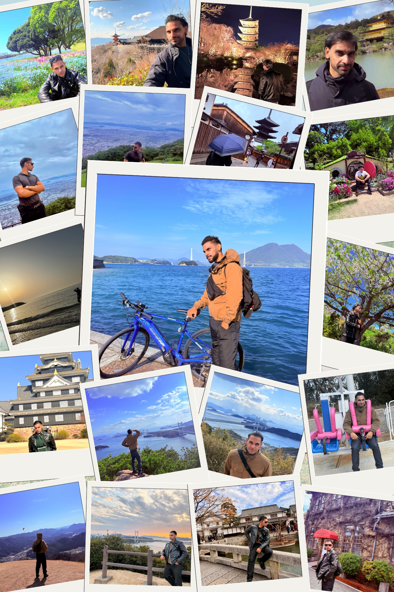
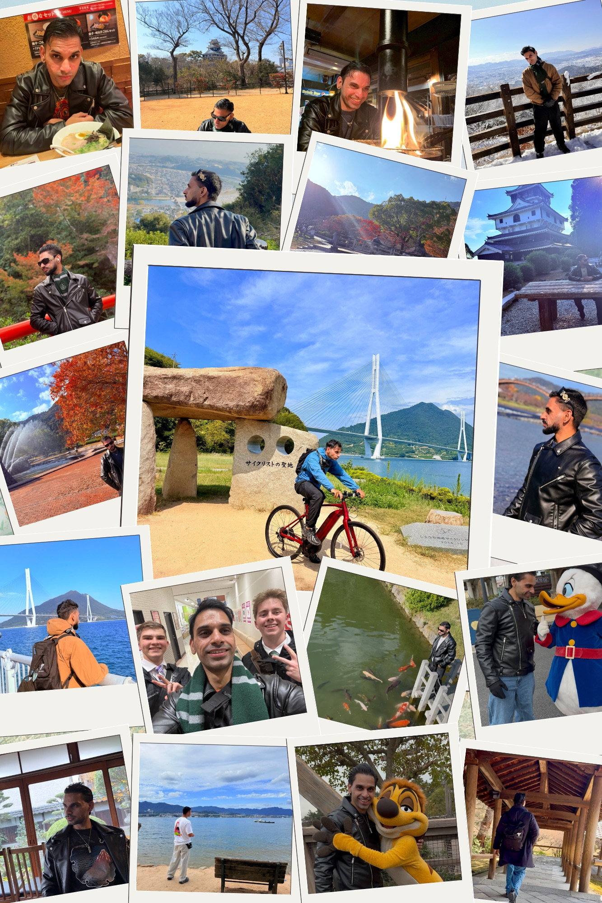
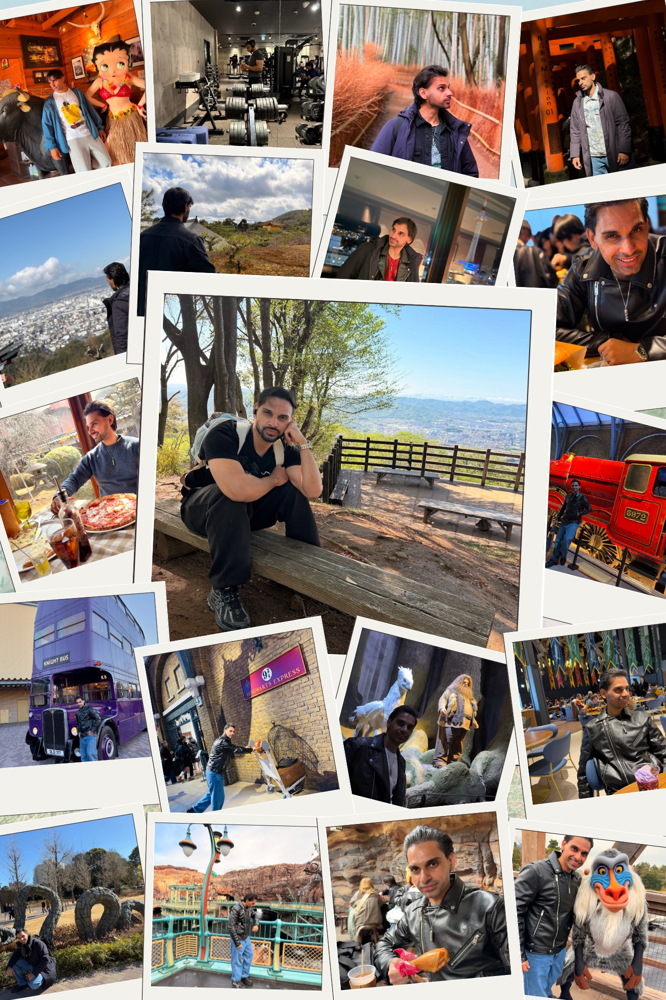
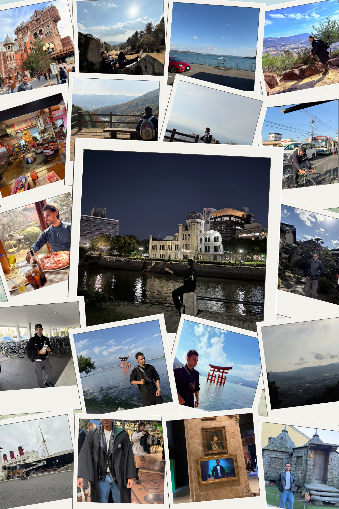

日本を旅して、その魅力を伝える
私の一番好きな趣味は、旅行をして新しい場所を訪れ、その土地ならではの文化や魅力を体験することです。
これまでに東京、大阪、京都、岡山、広島、愛媛、山口、北九州、福岡を訪れました。それぞれの地域で異なる文化や景色、人との出会いを楽しむことができました。
今年は熊本県と大分県を訪れる予定です。これからも日本各地を旅し、新しい発見や経験を重ねていきたいと思っています。
← Back to Home



